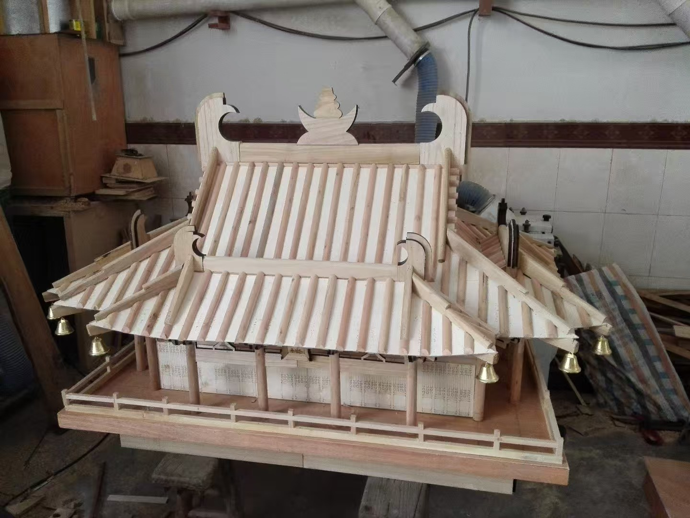
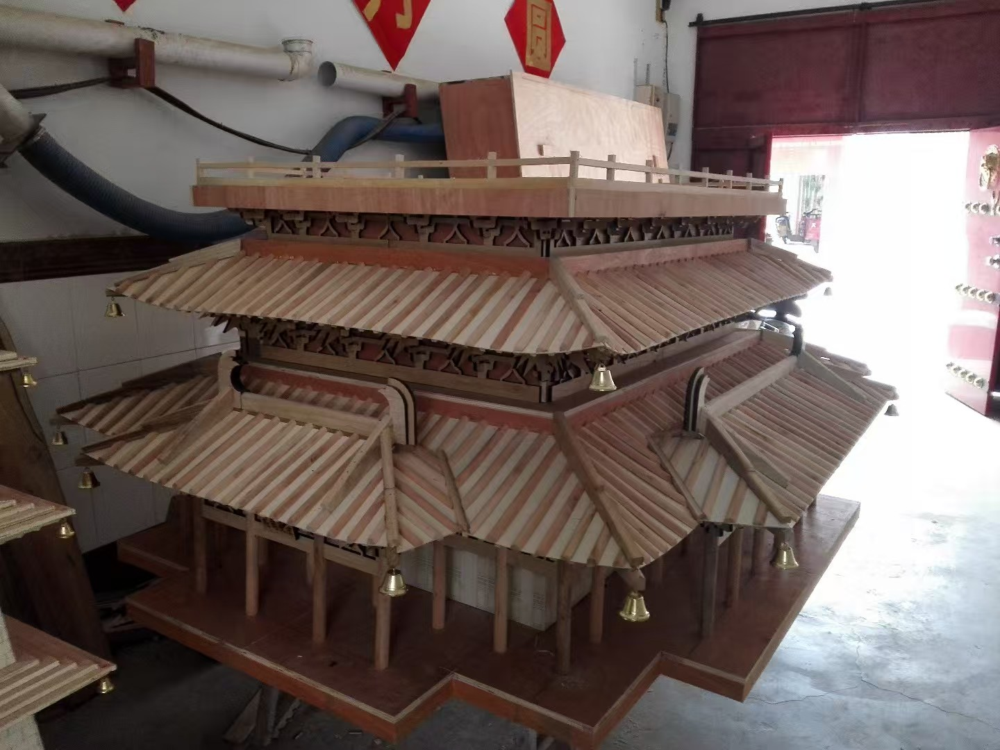
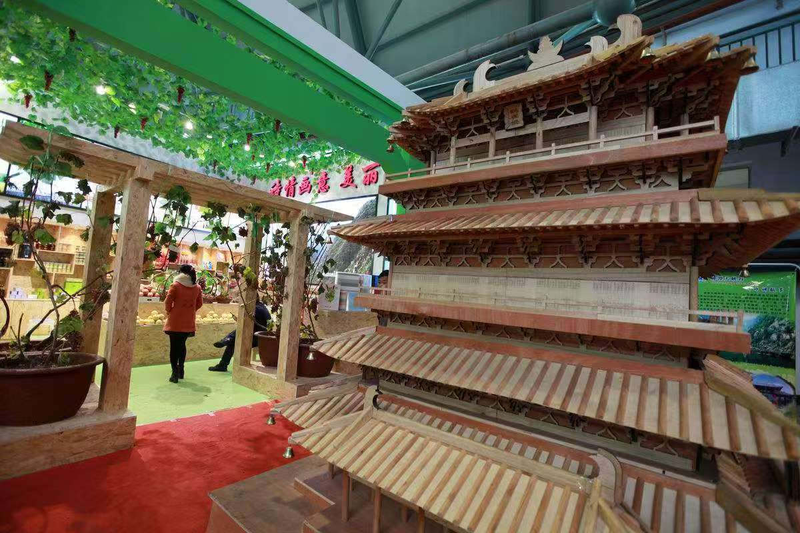
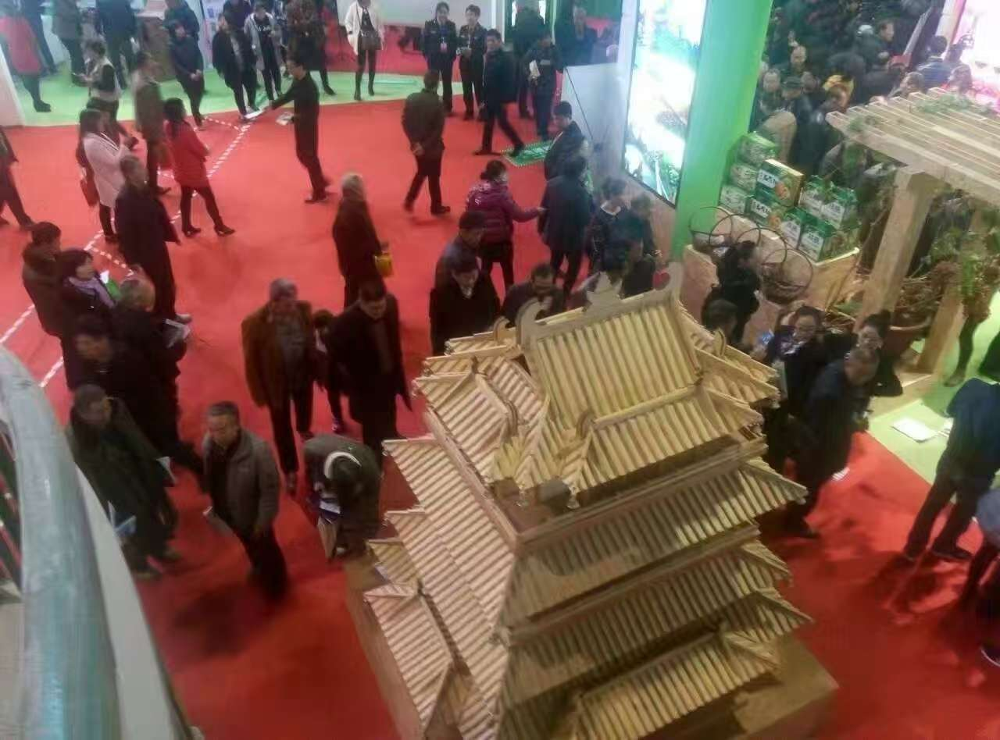

Large Guanque Tower Model
More than ten years ago, we built a large wooden model of Guanque Tower for display. Compared with my smaller architectural miniatures, this one was closer to an exhibition piece: bigger, heavier, and made to be assembled in a public space.
The building behind the model
Guanque Tower is one of the well-known ancient-style landmarks of Shanxi. Its strong vertical form, layered rooflines, and broad stepped silhouette make it a natural subject for a wooden architectural model.
The tower is also tied closely to classical Chinese poetry. Wang Zhihuan's "Deng Guanque Lou" made the place famous far beyond its physical location, turning the tower into an image of height, distance, and looking outward.
Work in progress
These first photos show the model before final assembly. At this stage, the main body, roof layers, railings, and repeated structural elements were already taking shape, but the piece still had the honest look of a workshop build.
A large model like this depends on proportion more than tiny detail. The repeated eaves and stacked floors needed to read clearly from a distance, especially once the model was moved out of the shop and placed in an exhibition environment.


Assembled for exhibition
The next photos were taken after the model was assembled at an exhibition. Seeing it outside the workshop changed the feeling of the piece: it was no longer only a woodworking project, but something visitors could walk around and understand at a glance.
Looking back, I like how direct the build was. It was made by hand, with practical joinery and repeated parts, but the final result still carried the recognizable presence of Guanque Tower.


Why I keep these old photos
The photos are old, but they still matter to me. They record a kind of woodworking that is patient, architectural, and connected to local culture.
Before I was documenting electronics, motion systems, and modern workshop tools, there were already projects like this: wood, structure, memory, and the pleasure of making something large enough to stand in the world.